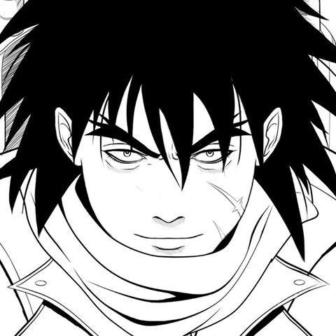

Atas
Atas está ambientado en una región medieval dominada por misteriosos monstruos que salen de lo que parece ser un universo paralelo.
La historia que narra la novela es sólo la última parte de una mitología que John Myer comenzó en 1995, cuando se encontraba en el hospital tras haber sido gravemente herido en un accidente de tráfico y en la que estuvo trabajando durante 1 año aproximadamente.
